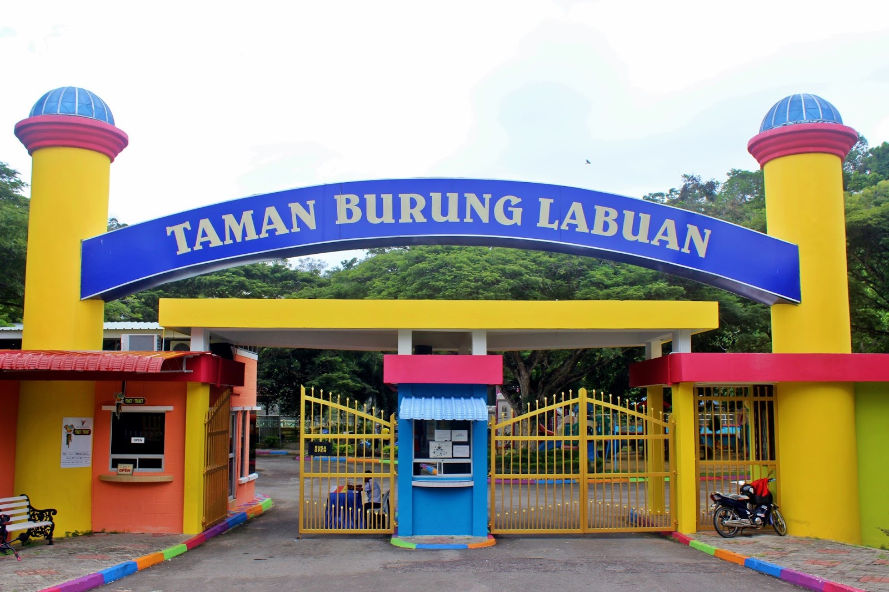

Plan Your Visit to Labuan Bird Park

🕒 Opening Hours
Monday to Thursday: 9:00 AM – 4:30 PM
Fridays: Closed
Open on weekends and public holidays
🎟️ Ticket Prices
- Malaysian Adults: RM3
- Children (below 6): RM1
- Senior Citizens/Student : RM2
- Non-Malaysian: RM5
📌 Tips for Visitors
- Bring a hat or umbrella for sunny days.
- Photography is allowed — bring your camera!
- Feeding sessions happen at different times — check the schedule to catch your favorite birds in action!
🕊️ Feeding Time
- Peacock, Duck, Rabbit & Fish: 9:00 AM – 4:30 PM
- Storks: 2:30 PM – 3:00 PM
- Hornbills: 3:00 PM – 3:30 PM
- Sun Conures: 3:30 PM – 4:00 PM
🚗 Getting There
Labuan Bird Park is located near the Chimney Tower in Tanjung Kubong, easily accessible by car or taxi. Parking is available on-site.
📍 Location
Labuan Bird Park, Tanjung Kubong, 87000 Labuan, Malaysia